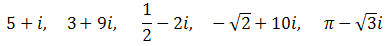
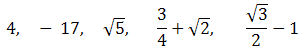
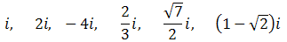
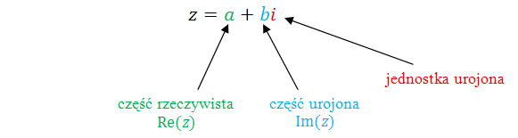

Liczbą zespoloną nazywamy liczbę postaci: \[a+bi\] gdzie: \(a, b \in \mathbb{R} \).
Nazewnictwo:
\(a\) - część rzeczywista liczby zespolonej
\(b\) -
część urojona liczby zespolonej
Literka \(i\) - to jednostka urojona.
Liczbę zespoloną \(a+bi\) można równoważnie jako uporządkowaną parę: \[(a,b)\]
Przykłady liczb zespolonych z częścią rzeczywistą i urojoną: 
Przykłady liczb zespolonych tylko z częścią rzeczywistą: 
Przykłady liczb zespolonych tylko z częścią urojoną: 
Uwaga odnośnie interpretowania liczb zespolonych:
- Jeżeli liczba zespolona nie ma części
rzeczywistej, to równoważnie mówimy, że jej część rzeczywista jest równa zero.
- Jeżeli liczba zespolona nie ma części urojonej, to
równoważnie mówimy, że jej część urojona jest równa zero.
Żeby określić dowolną liczbę zespoloną, to wystarczy podać jej część rzeczywistą (w
definicji literka \(a\)) i urojoną (w definicji literka \(b\)).
- Liczba zespolona o części rzeczywistej \(7\) i urojonej
\(13\), to liczba: \(7 + 13i\).
- Liczba zespolona o części rzeczywistej \(-1\) i urojonej
\(2\), to liczba: \(-1 + 2i\).
- Liczba zespolona o części rzeczywistej \(3\) i urojonej
\(-1\), to liczba: \(3 - i\).
- Liczba zespolona o części rzeczywistej \(0\) i urojonej
\(-4\), to liczba: \(-4i\).
Ważne!
Część urojona liczby zespolonej, to
jedynie współczynnik liczbowy stojący przy \(i\) (bez \(i\)).
Liczby zespolone często oznacza się symbolem \(z\). Możemy zapisać np.: \(z = 7 +
13i\).
To jest tylko takie umowne oznaczenie, podobnie jak np. liczby naturalne oznaczamy
często literką \(n\).
Przyjmijmy, że mamy daną liczbę zespoloną \(z = a + bi\). Wówczas mamy:

Uwaga odnośnie zapisu części rzeczywistej i
urojonej.
- Część rzeczywistą liczby zespolonej \(z\) oznaczamy symbolem:
\(\operatorname{Re}(z)\) (ang. Real).
- Część urojoną liczby zespolonej \(z\) oznaczamy symbolem: \(\operatorname{Im}(z)\)
(ang. Imaginary).
- Zamiast pisać: "Część rzeczywista liczby zespolonej \(7 + 13i\) jest równa \(7\)" oraz
"Część urojona liczby zespolonej \(7 + 13i\) jest równa \(13\)", zapiszemy krótko:
\(\operatorname{Re}(7 + 13i) = 7\)
\(\operatorname{Im}(7 + 13i) = 13\)
- \(\operatorname{Re}(-5i) = 0\)
\(\operatorname{Im}(-5i) = -5\)
- \(\operatorname{Re}(1 + \sqrt{2}) = 1 + \sqrt{2}\)
\(\operatorname{Im}(1 + \sqrt{2})
= 0\)
- \(\operatorname{Re}\Bigl (3 + \sqrt{5} + (1 - \pi )i \Bigl ) = 3 + \sqrt{5}\)
\(\operatorname{Im}\Bigl (3 + \sqrt{5} + (1 - \pi )i \Bigl ) = 1 - \pi\)
Liczba zespolona jako para liczb rzeczywistych (punkt)
Każdą liczbę zespoloną \(z = a +
bi\) można utożsamiać z parą liczb rzeczywistych: \[(a,b)\]
- Para \((2, 7)\) oznacza liczbę zespoloną \(z = 2 + 7i\).
- Para \((7, 2)\) oznacza liczbę zespoloną \(z = 7 + 2i\).
- Para \((15, -1)\) oznacza liczbę zespoloną \(z = 15 - i\).
- Para \((0, 1)\) oznacza liczbę zespoloną \(z = i\).
- Para \((6, 0)\) oznacza liczbę zespoloną \(z = 6\).